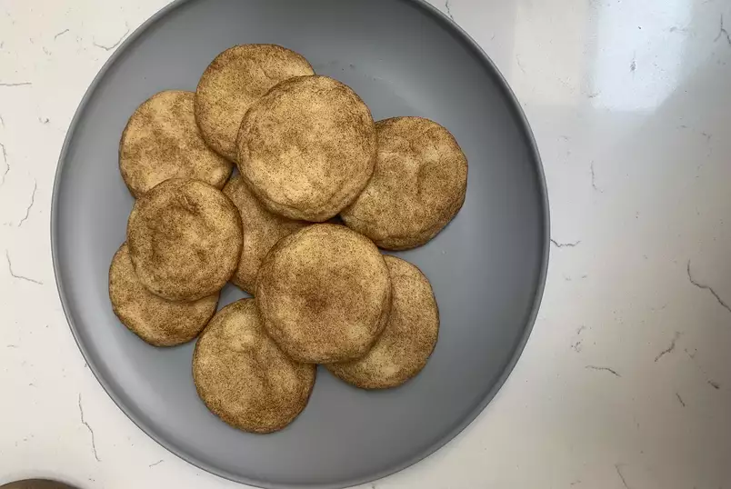

Mrs. Sigg's Snickerdoodles

- 1/2 cup butter, softened
- 1/2 cup shortening
- 1 1/2 cups white sugar
- 2 eggs
- 2 teaspoons vanilla extract
- 2 3/4 cups all-purpose flour
- 2 teaspoons cream of tartar
- 1 teaspoon baking soda
- 1/4 teaspoon salt
- 2 tablespoons white sugar
- 2 teaspoons ground cinnamon
- Preheat oven to 400 degrees F (200 degrees C).
- Place butter, shortening, 1 1/2 cups sugar, eggs, and vanilla in a large bowl; beat with an electric mixer until smooth. Add flour, cream of tartar, soda, and salt; beat just until combined. Shape dough by rounded spoonfuls into balls.
- Place 2 tablespoons sugar in a small bowl; stir in cinnamon. Roll balls of dough in mixture. Place 2 inches apart on ungreased baking sheets.
- Bake 8 to 10 minutes, or until set but not too hard. Remove immediately from baking sheets.